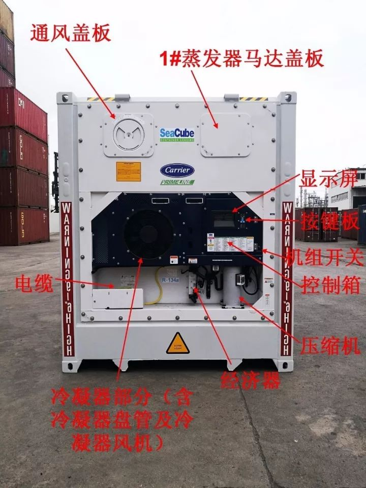
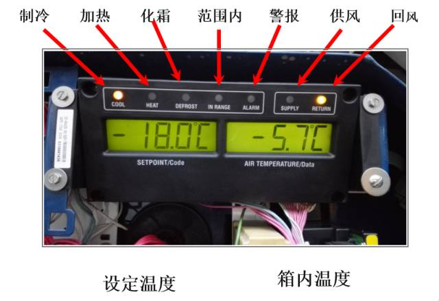
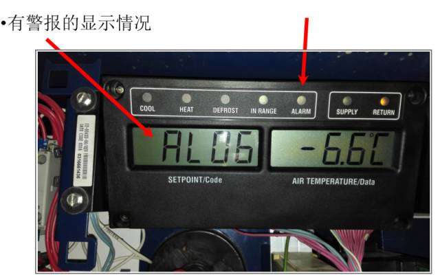
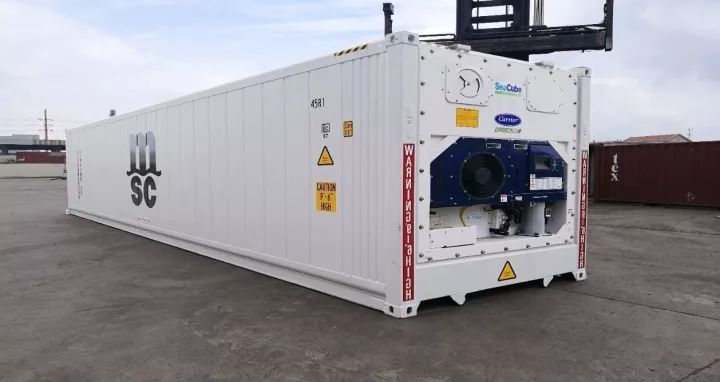
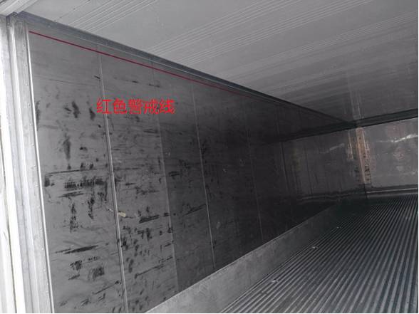
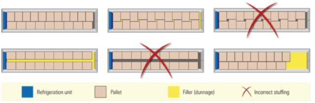
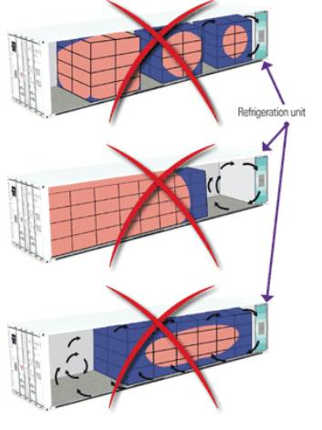

冻柜的设备的简单介绍
相对于普通箱，冻柜除了在箱子内部包裹着保温用的保温层（俗称发泡层）以外还有一些比较特殊的设备。

为方便大家日常的使用， 我们对冻柜的关键部位进行了标注，供大家参考。
机组显示板

制冷灯：当制冷压缩机接通时，该灯随之接通
加热灯：当机组处于加热或除霜方式时该灯接通，指示加热器的工作状态。
除霜灯：当机组处于除霜方式时该灯接通
范围内灯：当控制温度感温器处于所规定的设定点允许误差范围内时，该灯接通。
出风灯：当使用出风感温器进行控制时该灯接通。当此指示灯亮起时，空气温度显示器内显示的温度是在回风感温器的读数。如果启动除湿或加湿功能，则此显示灯将闪烁。
回风灯：当使用回风感温器进行控制时该灯接通。此灯亮起时，空气温度显示器内显示的温度是在回风感温器的读数。如果启动除湿或是加湿的功能，则此指示灯将闪烁。
警报：当警报排列中有有效或无效的停机报警时该灯接通。
（附常见设备的中英文参照）
FOAM—保温层
CONTROL BOX --控制箱
COMPRESSOR -- 压缩机
FRESH AIR ACCESS PANELS --通风盖板
EVAPORATOR FAN PANELS --蒸发器马达盖板
Motor, Condenser Fan-- 冷凝器风机马达
CABLE-- 电缆
KEYPAD-- 按键板
DISPLAY-- 显示屏
CONDENSER-- 冷凝器
ECONOMIZER--经济器

冻柜使用过程中常见问题汇总：
首先，对于进口方面。由于商检局的要求，当您在进口货物为水果时，需要提供货物的冷处理记录。

其次，对于出口方面的这里也为您整理了一些日常用箱时的常见问题，供您参考：
1、请务必合理的装载货物，如果您将货物过多的装载到箱内，最大负荷高度不应超过集装箱的红色载重线。不然会影响到冻柜内部的冷风循环，引起风力循环不畅导致冷柜保温效果变差甚至失效。
冻柜集装箱装货时，必须将货物摆放至 T 型地板边缘。 这可确保在整个集装箱内有均匀的空气流通。如果货物不够填满 T 型地板，建议用填充物或衬垫塞满空位。 这种方法也可用于填充托盘之间的中间板面上的空隙。遵循以下指引，您可确保冰冻柜集装箱中的空气按您想要的路线在商品周围流通，而不是绕过整箱货物。（另附图片供参考）
装载示意图—俯视图

不正确的冷冻柜集装箱装箱示例

正确装箱的冰冻柜集装箱侧面图

2、货物自身的温度应与设定温度一致，避免热装货情况可能导致的货物受损。
3、请不要在打开箱门的时候启动冻柜设备，如在箱门打开的状态下对冻柜进行制冷，容易使空气中的水分凝聚在冷凝器盘管上，进而导致冷凝器盘管结霜严重，致使冻柜产生不制冷的现象。
4、如您将箱子送至工厂装货，请保证所使用的插座质量以及电压的稳定性，避免因电压不稳或因插座不规范而引起的集装箱相关部位的损坏。
5、货物在运输前需要预先冷却，然后再装进集装箱。以达到最佳的温度水平，这将在运输期间减少外部温度对产品的影响。使货物的保质期达到最大化。
6、使用的包装货物的物品需要具有防潮性。